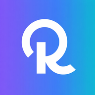

高低差

RunWhere
2.0
JA
EN
ZH
KO
🕐
＋
－
📍
▶
ホテル名・駅名・住所で検索...
🏃
🚴
JA
EN
ZH
KO
コースを生成
🗑️
スタート地点
現在地を取得
📍
—
✕
経由する観光スポット数
0
なし
1
か所
2
か所
3
か所
スポットの種類
🏛️
観光名所
有名スポット・展望台
⛩️
神社・寺
パワースポット
🎨
美術館・博物館
文化・アート
☕
カフェ
評価4以上
距離設定
5
KM
5K
10K
15K
HM
FM
ペース設定
6:00
分/km
8:00
7:00
6:00
5:00
4:00
20
km/h
10
15
20
30
40
ルートオプション
🔄
ループ
スタートへ戻る
🌸
景観ルート
公園・川沿いを優先
📏
フラット
高低差を最小限に
🚦
信号が少ない
交差点を最小化
ルート情報
✨
AIがコース名を生成中...
—
—
—
KM
距離
—
MIN
時間
—
M
標高
GPX
🟢 Google Maps
ルートをシェア
—
📋
URLをコピー
📷 QRコード
ルート履歴
✕
まだルートはありません。
最初のRun Tourismコースを生成しましょう！